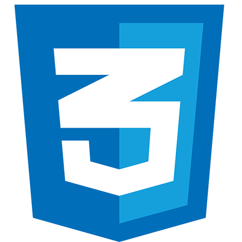

The Feature web Developer
Hello, my name is C A Trinesh, also known as CAT or MrCAT.
I am currently learning web development through

Hello, my name is C A Trinesh, also known as CAT or MrCAT.
I am currently learning web development through
So far, we have learned the basic structure of an HTML webpage to build projects just like this one.

We explored the fundamentals of CSS, learning how to style layouts and design visually appealing webpages like this one.
Next up is JavaScript, the engine that brings websites to life. I am excited to dive in and learn how to transform static pages into interactive, dynamic web applications."
Looking ahead, my full-stack path will split into either Full Stack JavaScript or Ruby on Rails, allowing me to build complete, powerful web applications.
I tried learning web development many times through YouTube, but I always ended up quitting. I got distracted, overwhelmed, and frustrated because I couldn't remember much of what I learned. Then one day, I stumbled across The Odin Project. At first, I saw it as just another free, community-built web development resource and moved on. But for some reason, I couldn't stop thinking about it.
A few days later, I came back and started exploring. What hooked me wasn't the curriculum itself at first—it was the introduction section. As I read through it, everything just clicked. It didn't feel like I was being told to learn an endless list of technologies or read a 500-page book. Instead, it explained the journey clearly, set realistic expectations, and gave me confidence that becoming a web developer was actually achievable.
That experience was completely different from YouTube tutorials. Many tutorials felt rushed, overloaded with information, or led me into rabbit holes of advanced topics before I had even learned the basics. The recommendations and endless content often became distractions. I'd watch hours of videos, feel productive, and then realize I couldn't remember much of what I had learned.
The Odin Project felt different. There were no distractions, no unnecessary detours, and no pressure to learn everything at once. The curriculum focuses on what you need to know, backed by practical assignments that help the knowledge stick. Instead of pushing information at me, it pulled me forward one step at a time.
I was hesitant when TOP recommended Ubuntu because it felt like a big step so early in the journey. But after using it, I understood why it was included. Like everything else in the curriculum, it serves a purpose.
After years of starting and quitting since 2015, The Odin Project finally gave me the motivation, structure, and mindset I needed. I've now reached the end of CSS Foundations, and honestly, I'm surprised and proud that I'm still going. Next up is JavaScript—the big one. Hopefully she'll be as gentle as HTML and CSS have been.
I wish I had found The Odin Project years ago, but I'm glad I found it now. Thank you, TOP, for helping me stay on this journey.
-CAT
I hope you like this webpage, if you did you can appreciate by liking this project in Odin community's, "Project: Landing Page solutions" submission